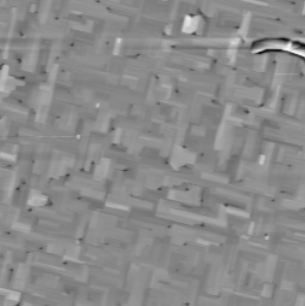

Research Interests
I am a PhD student researcher and Endowed Engineering Fellow in the Materials Science and Engineering Department at Brown University.
In the Atomic Scale Quantum Materials Lab at Brown, we grow materials
(mostly oxide perovskites) whose microscopic quantum properties result in large-scale effects that can be measured
and harnessed for myrad applications spanning computation, sensing, cryptography, and more. My specific interests include ferroelectric materials,
multiferroic phase change nucleation and growth dynamics, and applications in next-generation computation such as compute-in-memory and analog computation
December 6, 2025
This past week was the MRS Fall 2025 Meeting
in Boston, MA, where I presented my first ever oral presentation at a major conference. My talk covered the work I have been
doing creating an experimental setup where we measure ultrafast qusi-dynamics by pairing the high voltage fast pulser we
put together at MIT with piezoresponse force microscopy (PFM). The talk was well received, I had many great questions and
conversation after the fact. I look forward to developing this project into a full paper next semester and potentially collaborating
with some other groups who I made contact with at the meeting.
August 28, 2025
For the past couple weeks I have been taking trips to MIT to work with our collaborator David Bono
at his electronics workshop to develop a custom ultrafast, high voltage pulse generator. By making use of transistors that operate in avalanche breakdown mode to switch a charged line on and off,
we are able to generate ~170V pulses with a rising edge of ~750ps. Once we source the necessary power supply back in our lab at Brown, I will begin experiments using the pulse generator to push
ferroelecric domain walls laterally in our BFO thin film samples. Previous experiments used a 50V version of this circuit, and because of lithography constraints, I believe we had insufficient
electric field to demonstrate coherent domain wall motion. With this new circuit, I am hopeful we will be able to see more consistent and reliable motion of a single domain wall, which will
eneble a lot of really fun physiscs exploration.
August 15, 2025
This summer I have been working on developing a BFO recipe for our lab. I have been growing BFO films via Pulsed Laser Deposition (PLD) on SrTiO3
substrates, and have been working on optimizing the growth conditions to achieve high-quality films with the desired phase (measured via X-ray diffraction) and
surface morphology (measured via Atomic Force Microscopy). Though this is my first hands-on growth project, I have picked it up quickly and already have had the
pleasure of teaching our new PhD student and postdoc the ropes of the PLD sytem. We are getting quite close to a good baseline recipe, our current best films show
great XRD peaks with fringing, and the expected surface morphology (pictured below).
In other news, my abstract for the MRS Fall 2025 Meeting was accepted, and I will be giving an oral
presentation on my work on domain wall dynamics in BFO (more info to come on that soon). This will be my first major talk, I'm quite excited to start the
communication and outreach part of my career :)
